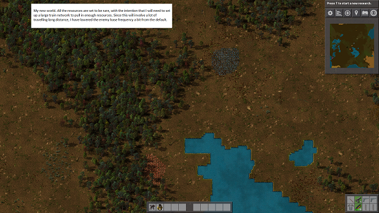
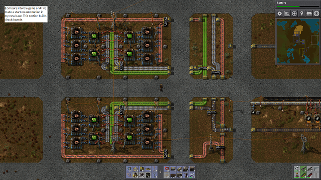

This is a log of my current playthrough of Factorio. This playthrough has one simple motivation: I like trains. I find the trains in Factorio to be really
enjoyable, but also quite unnecessary. In order to make them more necessary I started a game where resources patches were rarer and smaller than normal so
I would need to create a large train network to bring resources to my base from many distant resource patches. I found that if I set them to be too rare or
too small then they just didn't show up at all, so I found the minimum settings where they would actually appear and used those.
This was originally an image-only log before I decided to make this page, so the descriptions of the first few images are on the images themselves.
I'll write more detail about them on this page eventually.






Map - 6/12/2016
Nighttime Map - 7/12/2016
I was just attacked for the first time this game. My base defenses easily took care of it, but they did need a bit of repairing afterwards.
My iron supply ran out again so I had to make a new iron outpost. It's uncomfortably close to a rather large enemy base.
I've started my oil processing. This is my oil outpost, which puts oil into barrels and loads them onto a train.
When the train arrives at the base the barrels are unloaded and emptied. The oil is stored in tanks then processed into heavy oil, light oil, and petroleum gas.
The petroleum gas is processed into plastic and sulfur. The sulfur is turned into sulfuric acid which is used to make batteries.
I made a house for Kenneth.
Map - 13/01/2017
I've finished automating the production of all research packs.
Blue research packs require advanced circuits, so I've automated them. Unfortunately I have nowhere near enough oil to create the amount of plastic this requires, so my next job is to connect more sources of oil to my rail network.
I'm using grenades to destroy trees to uncover an oil field. Don't try this at home.
Quite a large oil outpost. Both my oil outposts are far from enemies so they won't need turrets to defend them.
Some of my regular transport belts aren't keeping up with demand any more so I've started replacing them with fast transport belts. I've automated production of fast transport belts, fast underground belts, and fast splitters because they take annoyingly long to make manually.

Yo dawg, I heard you like assembly machines.
One lone biter wandered into Oil outpost 2... turns out I did need defences there after all.
Whoops. Sorry Kenneth!
Now that I'm making advanced circuits I can use them to make electric furnaces. I've started upgrading my steel furnaces.
Map - 18/01/2017